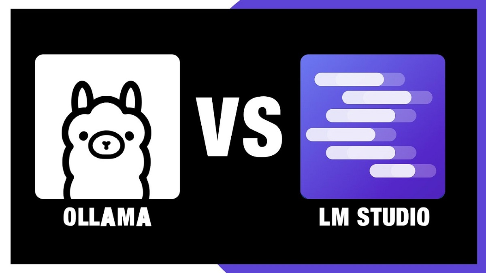

After realizing that vibe coding wasn't the way to actually learn programming (even though it's just a hobby!), I started looking for different options and tools to help me get started with deploying AI locally on my laptop.
The first and most beginner friendly option was of course LM Studio. It was as simple as installing any regular .exe program, and once I booted it up I was greeted with a nice and clean UI. Personally though, I didn't like it. I thought it looked worse than ChatGPT in terms of minimalism, which is saying something. To be fair, it wasn't inherently bad because all the extra stuff displayed around the screen was there to let you customize how the AI model behaved. But after a little bit of exploring, I decided to move on.
Next up was Ollama, which I'd say sits somewhere between LM Studio and llama.cpp. For one, it had its own interface that looked a lot like ChatGPT, but I could also control it through powershell, which is basically just a text based window where you type instructions directly into your computer instead of clicking around a screen (think like hackerman). This was also the point where I discovered a whole world of different AI models. Google's Gemma, Microsoft's Phi, Meta's Llama. And as controversial as AI is, there was an entire community of open models over at Hugging Face, which is kind of like GitHub but for AI models, and I had no idea that world even existed. Though, with my limited hardware I could only play around with models under 9B parameters with quantization, but that was still enough to go down a pretty deep rabbit hole. The thing I really didn't like about Ollama though was that it came with its own ready to use UI (I wanted to make my own, alright?!) and that it lived in my taskbar. And anything sitting in my taskbar is usually a red flag for memory hogging. So I moved on again.
This time I found llama.cpp, which I believe is the backbone that most of the local AI ecosystem quietly depends on. This one was a bit more difficult to navigate. I had to launch either llama-cli.exe for a CLI experience (which I first thought was a shortcut for "client") or llama-server.exe which had its own UI like the other two. Naturally, guess which one I picked. I went with the CLI because I didn't want another pre-built interface. But even then, the same problem was there. All the interesting work was already done for me. The model selection, the quantization, the serving, the interface, all of it was handled. I wasn't a builder. I was just another user of a local alternative to ChatGPT, and I hated that. I'd gone from vibe coding my own assistant to plug and playing someone else's.
So by this point I was set on building my own Python wrapper around llama.cpp to actually build something, customize the model, and understand how they work and process data. I needed to get my hands into the pipeline.
Don't get me wrong. These tools are not bad for general use if you just want a quick and private alternative to the big AI apps. They just weren't for me.